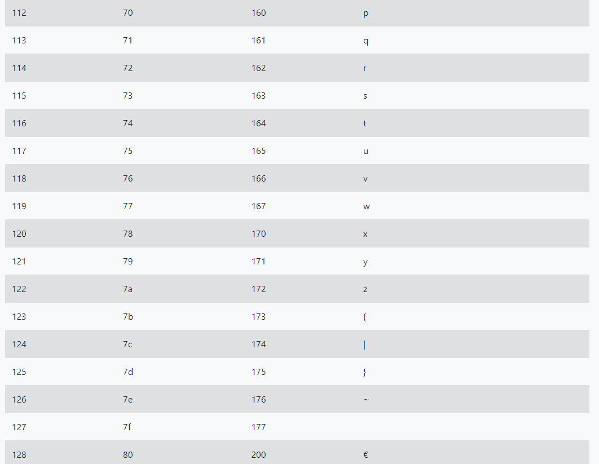

Kody ASCII-to kod liczbowy, który jest przyporządkowany każdemu znaku. W C++ litery, cyfry, znaki przystankowe, znaki niedrukowalne takie jak spacja czy enter przechowujemy w zmiennej typu char, mamy wtedy do dyspozycji znaki z przedziału od 0 do 127, oraz w rozszerzonym typie unsigned char, tu znaki zawierają się w przedziale od 0 do 255.
